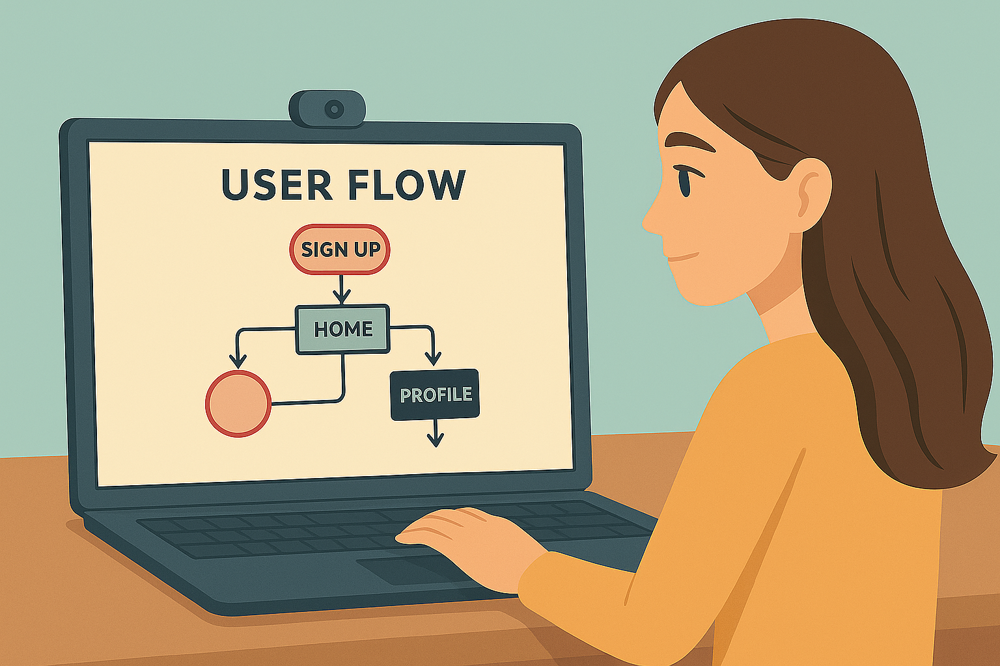
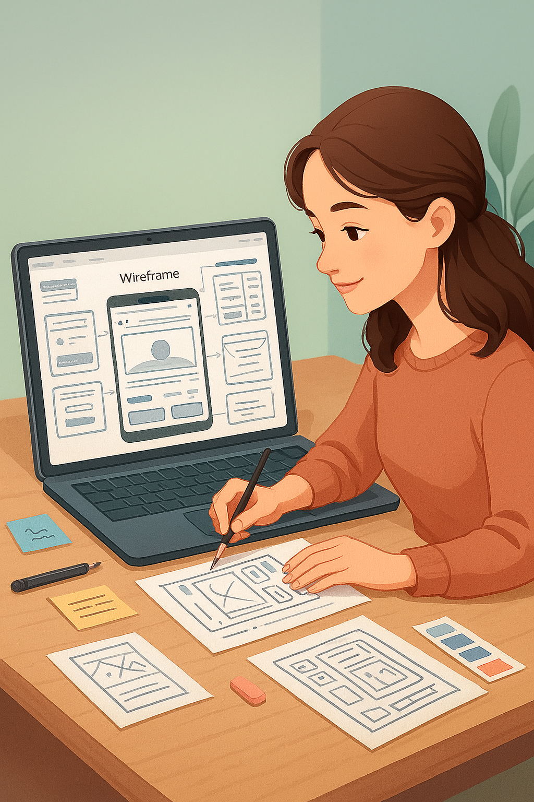
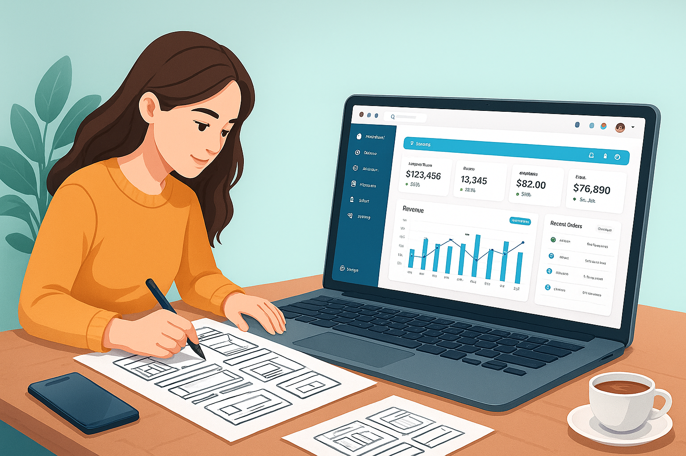

What is EMAAR - PM Connect
A comprehensive in-house project management application, EMAAR PM Connect serves as a one-stop solution for streamlining day-to-day corporate activities and gaining clear insights into organisational workflows.

A comprehensive in-house project management application, EMAAR PM Connect serves as a one-stop solution for streamlining day-to-day corporate activities and gaining clear insights into organisational workflows.
In every corporate environment, managing day-to-day activities and keeping track of workflows can often feel scattered and time-consuming. To address this, we built EMAAR PM Connect, an in-house project management application designed as a one-stop solution. The platform not only streamlines daily corporate operations but also provides teams with a clear, structured view of the entire workflow, enabling smarter collaboration, better decision-making, and improved efficiency across departments.
My Role
UX Design, UI Design
Tools
Figma
Timeline
Sept - Nov
Team
1 designer, 1 Project Manager
Before PM Connect, daily operations were manual and scattered—employees faced delays, admins spent hours on repetitive tasks, and management lacked real-time visibility. This led to inefficiency, silos, and slower decisions across the organisation.
We built EMAAR PM Connect, a one-stop platform that digitises manual processes, simplifies task management, and gives real-time insights. With role-based access and clear workflows, it reduces inefficiencies and improves collaboration and decision-making.
Designing EMAAR PM Connect meant solving everyday workplace challenges—making tasks clearer for employees, simplifying processes for admins, and giving management real-time visibility. I focused on creating simple, role-based designs that feel seamless and supportive, turning a complex system into an easy, trusted partner at work.
Over an online chat, we gathered Project Information and Pain points, Excpectations
Started to work on user flow with multiple iteration
After carefully, worked on User-flow started to sketch wireframe.
After all the iterations, all the discussions i started to work on the Visuals
Me and a developer reviewing a screen design together. Each screen was shaped by their feedback. we tested, Tweaked, repeat until one day they said YES!.

Research
WWhile designing PM Connect, we listened to employees, admins, and managers. Their struggles with slow manual work, scattered tracking, and lack of visibility inspired us to build a platform that makes workflows simple, tasks organized, and decisions clearer
Before designing PM Connect, we asked a simple question—who truly relies on this platform every day? From employees struggling with scattered updates, to managers balancing team progress, to admins tracking workflows, and leadership seeking visibility—each had a unique story. By stepping into their shoes, we shaped solutions that feel natural, supportive, and easy for everyone.
We identified three key user groups:
Focus: Task updates, workflow clarity, meeting room bookings, desk reservations, and service requests
Focus: User onboarding, permissions, project configurations, monitoring activity logs, and ensuring data consistency
Focus: Real-time visibility into progress, KPI-driven dashboards, decision-making insights, and cross dpt. collaboration
When we started building PM Connect, I didn’t begin with software—I began with stories. I wanted to understand how people actually work—not just how they should work. I talked to project managers, teams, and leaders about their daily challenges. What I heard shaped everything—PM Connect became a smart, connected space where AI and human insight meet to make work simpler, clearer, and more connected.
Some of the questions i have asked with users according to the Features
For Management Department:
For Admin Department:
For Team Members:
A few Pain points:
Wish lists:
When someone logs into Apptimus, they don’t just see an app—they step into a workplace experience designed around their needs.

Wireframes
I created these flows to quickly map how each screen should work, inspired by the real challenges employees face in managing bookings, visitors, and services. It’s a rough version to test ideas before shaping them into a seamless workplace experience.
High-fidelity Wireframe:
Final Mockup
From scribbles and late-night ideas grew something real—a UI shaped by struggle, discovery, and genuine user stories. This final interface stands not just as a solution, but as a reflection of our journey: where creativity found clarity, and possibility became visible.
Employees
The employee dashboard tells the story of each project’s progress in one view. It starts with an overview of total, completed, pending, and approved projects, showing quick performance trends. The “Projects Overview” chart highlights which projects are on track or need attention, while “Budget Insight” reveals how planned and actual spending compare. The “Recent Projects” list shows team activity and progress, followed by “Pending Approvals” for items awaiting review. Finally, the “Milestone” section tracks key goals and their status. Together, the dashboard gives employees a clear, ongoing story of progress, priorities, and teamwork.
The Projects page presents an organized story of ongoing work across different teams like Research, Wireframe, and Visual Design. Employees can switch between views—List, Gantt, Calendar, Kanban, and Workload—to track progress from various perspectives. Each project row shows assignees, planned and actual dates, budget comparisons, and responsible leads, making it easy to spot deviations or delays. The Project Lead and Domain Lead guide each effort, while color-coded status tags—On Track, At Risk, and Approved—instantly reveal project health. With clear structure and quick-action options, this page helps employees stay aligned, monitor progress, and manage projects efficiently.
Admin
The Project Information screen is the first step in creating a new project. It captures key details like Request ID, Project Name, Program, Category, and Priority, setting the foundation for the work ahead. Fields for Client Name, Project Owner, and Assigned To connect people and responsibilities, while the Project Description defines purpose and goals. A progress tracker on the left guides users through the five steps — from Project Scope to Approvers — making the setup process clear, organised, and easy to follow.
As an admin, I’ve reached the final step of the project submission — the Approvers screen, Step 5 of 5. The previous sections are all complete, and now it’s time to assign who will review and approve the project. A simple “Add Assignees” field lets me search and add team members, while the list below displays each approver’s name, email, and avatar. Currently, I can see five members — Clair Bure, Ajmal Khan, Muhammed Ali, Asif Khan, and John Smith — with an option to remove anyone using the red Remove button. Once the list looks right, I can either go back to review earlier steps or click Submit to finalize the request. The clean, guided layout makes it easy to finish the process with clarity and confidence.
Style Guide
Color pallets
Primary Color
Secondary Color
Territory Color